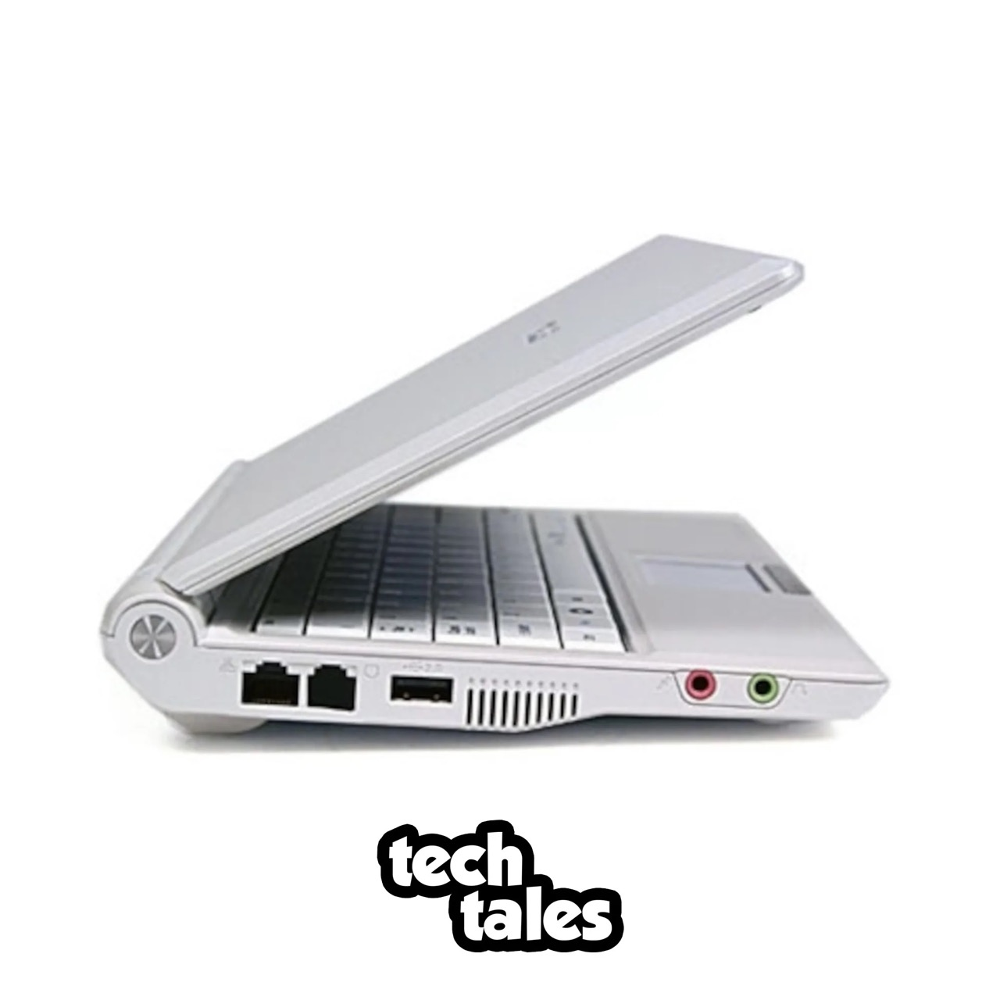
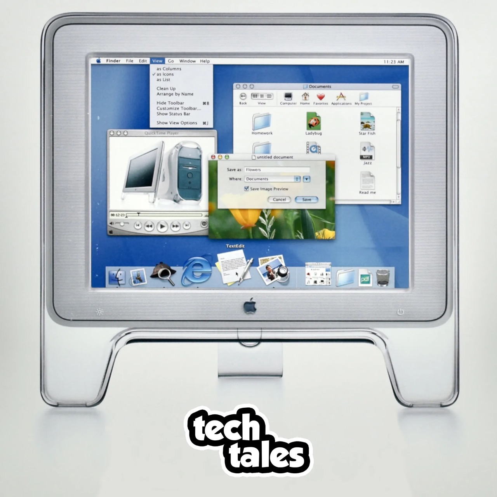
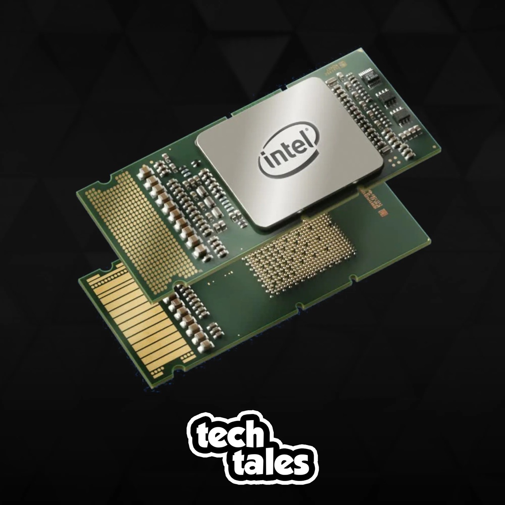

The first episode of my technology history podcast, Tech Tales, was published exactly one year ago today: June 14, 2021. I had wanted to produce something related to tech history for years, but it was only last year that I was able to narrow down a format I was happy with (largely inspired by You’re Wrong About) and recruit enough friends to join me for stumbling through hour-long recordings.
I would say the show’s first year has been a success. As of June 12, it has a total of 29 episodes, 4,291 plays/downloads on audio platforms, and 2,012 views on YouTube. The first year of episodes has covered topics like the NASA’s Voyager space probes, the 20 year-long development of Mac OS X (now macOS), Samsung’s exploding Galaxy Note 7 smartphone, and the failed Intel Itanium CPU architecture. Video games are an important part of technology history, so Tech Tales has also covered topics like the ‘Hot Coffee’ mod for Grand Theft Auto: San Andreas and the disastrous port of DOOM to the 3DO console.




I’ve also been fortunate to have friends that are not only willing to sit through long recordings as guests, but are also usually more entertaining than me. The first year included guests Cody Toombs (from Android Police), Joe Fedewa (from How-To Geek), Katie Janzen, Jacob Westall, Zachary Wander, Evan Hirsh, and Jules Wang (also from Android Police). I would also like to thank Mason Conrad for making the sweet logo.
I’ve also learned a few things from producing my own podcast. Growing a show without the backing of a major network is surprisingly difficult, and my few attempts at paying for advertisements on platforms like Twitter had disappointing results. It would be disingenuous to say listener numbers don’t matter to me, but I’m having just as much fun researching topics and recording episodes now as I was a year ago. Tech Tales was partially created out of a desire to publish something that I completely control, as opposed to my professional work, and that is still true to this day.
I’m not sure what the second year of Tech Tales will look like yet, but I’m excited to keep working on new episodes. If you want to come along for the journey, and maybe learn a thing or two about technology that has shaped our world, I invite you to subscribe with your app or platform of choice.